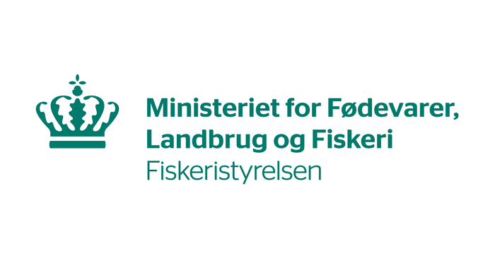
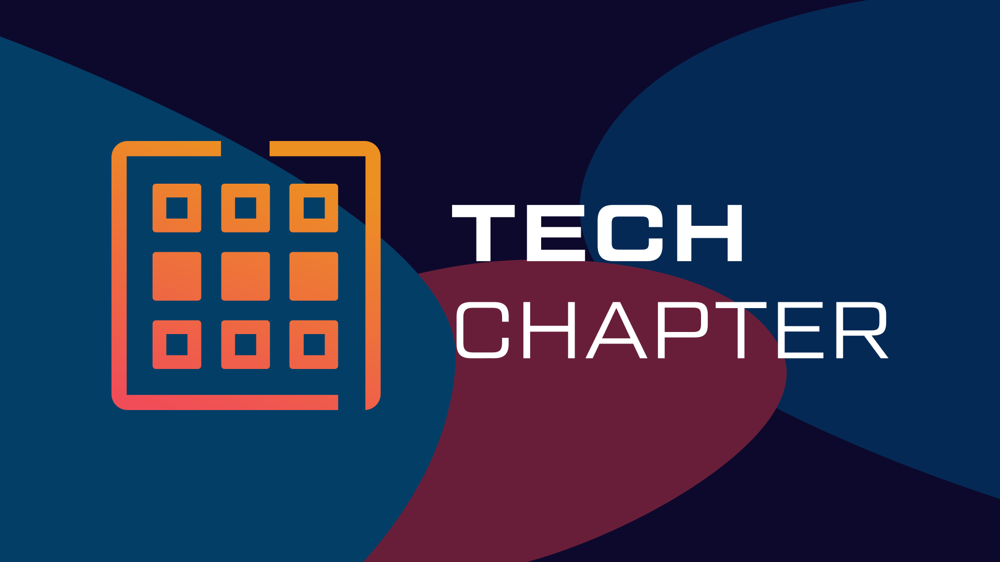

My Specialties
Some of my recent projects
News Podcast Generator
An app which scrapes news sites like Berlingske and Weekend Avisen for audio articles, parses them to an rss-feed, and uploads the feed to an S3 bucket.

Load test and API
A load test for Agency Cloud platform endpoints, that showed the need for an improved API. Thus a REST API was made for async processing to remove the bottleneck.

HeRo Project
A resume-editing wizard for easy maintanence of resumes. In this project i took care of collection of data from word datasource, as well as entity relation model optimization.